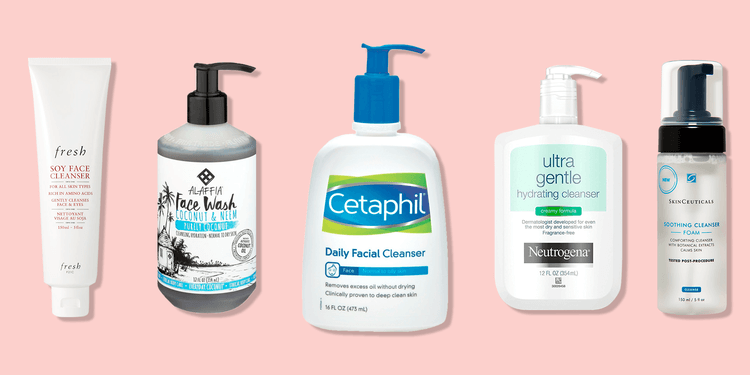
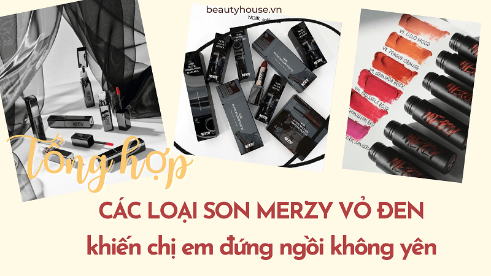
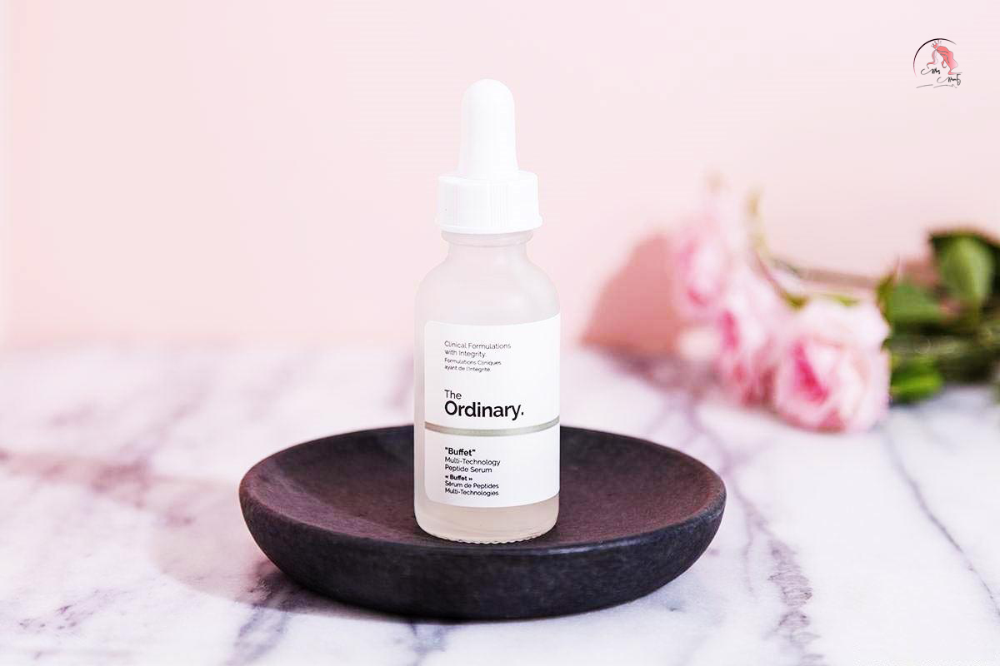
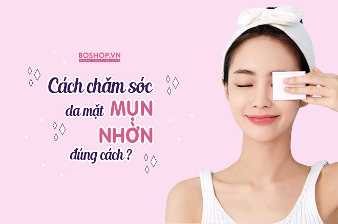

Lifestyle - Beauty - Fashion

Sữa rửa mặt là một trong những sản phẩm chăm sóc da không thể thiếu của bất kỳ ai. Dù là nam hay nữ, có makeup hay không thì nhất định nên sắm cho mình một chai sữa rửa mặt phù hợp nha.

Hello có ai quan tâm đến màu son đây cũng chính là những cây son mình yêu thích từ màu đến kết cấu, khả năng giữ màu trên môi nữa. Hãy xem ngay để biết đó là những cây son nào nha mà phù hợp với mình nha.

The Ordinary là một thương hiệu đang rất được các tín đồ làm đẹp yêu thích và ưa chuộng. Các dòng sản phẩm làm đẹp của the Ordinary vô cùng đa dạng với mức giá ở tầm trung phù hợp với túi tiền của người tiêu dùng.
COSRX là một brand dược mỹ phẩm của Hàn tập trung vào các thành phần tối giản nhưng hiệu quả để đặc trị các vấn đề da như dầu, mụn, da khô...Đã dùng khá nhiều sản phẩm của brand này nhiều năm rồi.

Mình đã từng chiến đấu với mụn trong thời gian dài và đã rút ra rất nhiều bài học sau đó. Một trong những việc mình thấy giúp da sạch mụn, giảm dầu hiệu quả nhất chính là phải làm sạch da đúng và đủ.
13 SẢN PHẨM ĐÁNG MUA NHẤT NĂM 2021 🔥 Best of 2021 🔥 Happy Skin
10 MẸO LÀM ĐẸP GIÚP MÌNH TỰ TIN HƠN-CHĂM SOC RĂNG,TÓC,MÙI CƠ THỂ.
Xin chào! Blog của tôi đã được xuất bản từ năm 2021. Đây là nơi tôi sẽ chia sẻ với bạn kinh nghiệm, cảm nhận của tôi, học hỏi, khám phá!